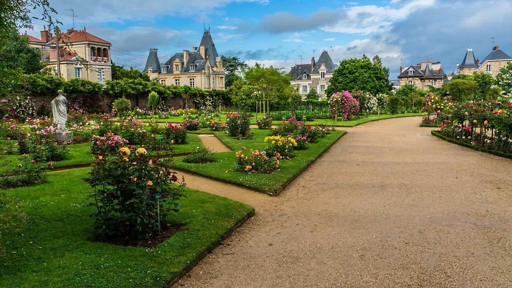

Places of contemplation and discovery, the rose garden and the botanical garden invite you to take a walk.
Located to the east of the park, they are nevertheless very popular places thanks to their colours, their
vastness and the thousands of varieties they have to offer.
The Botanical Garden is organised into eleven circular flowerbeds where over 3000 species are growing. The
route
through the garden is simple: start at the outside of the circle, beginning with the mushrooms, mosses and
ferns, and continue towards the centre of the circle, where the most impressive plants are located. The
Botanical Garden is a real living dictionary, with a small coloured sign in front of each plant explaining
its
main properties and its scientific classification.
Not far from there is the Roseraie, a unique place, rich in colours and varieties of rose stems, half-stems,
climbers and bushes. You will find a large number of climbing roses on the north wall separating the garden
from
the “Rue de la Palestine”.
The Carré des nouveautés (Square of Novelties) is a space in the rose garden dedicated to roses created over
the
last ten years. This square can be found around the Statue de la Pensée (Statue of Thought), a well-known
sculpture that can also be founded in the Louvre and Versailles. You will find in this area the famous "rose
de
Rennes", a variety created by Michel Adam and which won the Prix de la Rose (Rose's Award) in 1995.
Since 1990, there has also been a Carré des roses anciennes (Square of Old Roses), located to the south of
the
botanical garden. It allows you to discover the oldest varieties of "tea roses" and their derivatives.
Japanese
steps will allow you to access the statue of "Jeune savoyard pleurant sa marmotte" ("Young Savoyard weeping
for
his marmot") created by Julien Gourdel in 1835, this passage will also lead you to the heart of the old rose
garden. For lovers of dahlias, you will find your happiness in the north-east exhibition of the botanical
garden.
